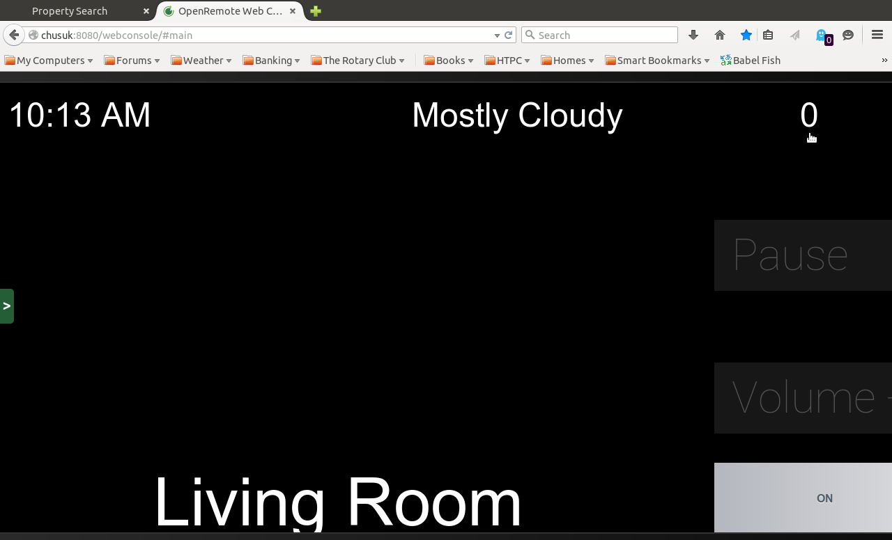
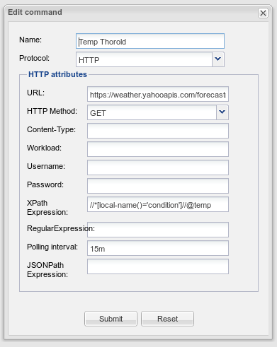

I am currently using the "free" version of OpenRemote with an Android tablet (Nexus 7 "2013") and the latest controller running on Trisquel linux.
On my panel, I display the weather obtained from Yahoo weather for my location. I am using a "Label" to display the output from the sensor. For warmer temperatures, > 0 Celsius, everything displays correctly. However, for colder temperatures, the value displayed is zero. As it is now, finally, starting to warm up, I would like to work out what is wrong so I can fix what needs fixing before next winter.
Here is a screen shot of the portion of the panel with the temperature for yesterday (Sunday) morning.

The RSS source for this display for the relevant portio is as follows:
<title>Conditions for Thorold, CA at 8:58 am EDT</title>
<geo:lat>43.11</geo:lat>
<geo:long>-79.23</geo:long>
<link>http://us.rd.yahoo.com/dailynews/rss/weather/Thorold__CA/*http://weather.yahoo.com/forecast/CAXX0497_c.html</link>
<pubDate>Sun, 22 Mar 2015 8:58 am EDT</pubDate>
<yweather:condition text="Mostly Cloudy" code="28" temp="-7" date="Sun, 22 Mar 2015 8:58 am EDT" />
... Sorry, I wasn't getting the images added correctly.
John
{kind=link}
{kind=link}
{kind=link}
{kind=link}
|
Please provide a screenshot of the command you use to get that temperature |
|
Here is the screen shot of the comm  The full URL is: https://weather.yahooapis.com/forecastrss?w=24067405&u=c John |
|
Did get it to work on OpenRemote using
Temperature has risen 2 degrees in the meantime |
|
Thanks, however, this does not seem to resolve getting the negative temperatures to display. I have tried the following to see if I can isolate the problem. 1. I ran the xpath query against a XPATH checker. The ones I tried successfully extracted the correct temperature both with 2 slashes or one. 2. I also checked the http.log for the Controller. The full data from Yahoo was received successfully AND the correct negative temperature was received. The log entry for the result is "INFO 2015-03-23 19:43:30,030 (HTTP): result of xpath evaluation: -5" However, the value displayed in the Label field for Temperature is still zero. It is the same in the WebConsole and the Android client. As mentioned earlier, I am currently using the latest "Free" version of the Controller, rather than the Pro version. Any other thoughts? Thanks for the help. John |
|
I am using Pro! That might make the difference. (I have gone through the same path as you with the XPath checker on an extracted view from your url.) |
|
Thanks! SOLVED! The sensor type is the issue!!! For some reason I had used type:level. I do not remember why anymore. Thank you very much for your help. John |
|
Thanks for the example. I added the Yahoo RSS feed to the HowTo XML parsing page |
|
You are welcome. Any help for future OpenRemote users will help us all. John |